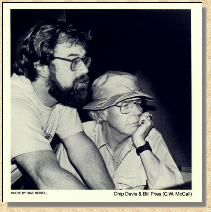
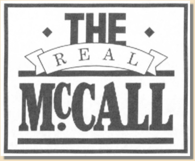

An American Storyteller
|
When you think about people you've been friends
with for many years, one tends to remember various deeds and events. Seeing Bill again after ten years made me realize that Bill Fries is a frame of mind, as well as a wonderful human being. Bill's tremendous creative ability and his thinking has saturated a lot of what I do, and have done, with American Gramaphone Records. Our common love of nature and burning desire to communicate Creativity has made this project a thrill and joy for me. It's a great honor and privelege to have Bill back home at American Gramaphone. Chip Chip Davis, President American Gramaphone Records |
|
 THE REAL McCALL Words - Bill Fries Music - Chip Davis C. W. McCall, as portrayed by Bill Fries (The Real) Produced by Chip Davis Recorded and Mixed by John Boyd Strings and Brass Engineered by Bill Bradley Recorded at Sound Recorders, Omaha and Universal Studios, Chicago Orchestral Contracting by Arnold Roth Engineering Assistants - Wayne Jesz Brian Ackley John Armstrong |
|
Mastered by Wayne Jesz, Sound Recorders
Orchestral Asistant, Louis J. Stout, Jr. Keyboard Technician, Louis F. Davis, Sr. Locomotive Whistle, Dale Hoaglan Jacket Concept by Bill Fries and Chip Davis Art Production by Hirsch Design |
|
RHYTHM SECTION
Jackson Berkey, Keyboards Chip Davis, Drums, Percussian, and Keyboards Eric Hansen, Bass Steve Hanson, Banjo Ron Cooley, Guitars FLUTE Willis Ann Ross OBOE Bob Jenkins HARP Mary Walter BACKGROUND VOCALS Liz Westphalen Pam Kalal Denise Fackler LynnDee Mueller Chip Davis Jackson Berkey Doug Fackler Jim Kalal PERCUSSIAN Wayne Jesz |
CONCERT MASTER
Arnold Roth VIOLIN I Ruben Gonzalez Samuel Magad Everett Mirsky Peter Labella Edgar Muenzer Thomas Yang Florentina Ramniceanu VIOLIN II Joseph Golan Helen Nightengale Steve Shipps Clara Lindner Thomas Hall Gail Salvatori Ronald Satkiewicz VIOLAS Oatakar Sroubek Danial Strba Robert Swan John Bartholomew Roger Moulton Martin Abrams Marlou Johnston |
CELLI
Barbara Haffner Lenny Chausow Phillip Blum Judith Stone Felix Wurman Mark Lekas FRENCH HORNS Dale Clevenger Alice Render Clevenger Richard Oldberg David Kappy BASSES Joseph Guastafeste Collins Trier Virginia Dixon Gregory Sarchet TRUMPETS George Vosburgh Eric Hansen TROMBONES Ed Kocher Arthur Linsner Charlie Vernon |
|
It has been a great thrill for me to go back
to the studio and re-create these story songs after all these years. I know Chip has gotten a kick out of it too. Fifteen years ago, (we can't believe it's been that long) Convoy was num- ber one with a bullet on every conceivable chart in the Known Universe. |
Fort Calhoun Nuclear Power Plant Boys.
Eight more years went by. Then, last Rocky Mountain September, Chip called me up on his Watts Line and said, "Hey Willy. I got an idea. Why don't we re-do all those old McCall tracks and release 'em on compact disc?" I said, "I don't even |
|
We knew right off we must
have been doing something right. So I went home and got out my word processor (chewed-up pencil) and Chip went home and got out his music processor (elegant quill) and sixty songs later we had knocked off six albums. |
 |
own a CD." Chip replied,
"Don't worry, it's nothin' but zeroes an' ones, digital, dontcha know." I said, "Why not." Three months went by. We picked out 15 of those old McCall tunes and added a new one for good measure |
|
That took six years. I had
run out of stories to tell, so I packed up my CJ- 5 and the love of my life, Rena Jayne, (the R.J. in Black Bear Road) and all the kids and moved off to Ouray, Colorado to go fly-rod- ding for Cutthroat Trout. Meanwhile, back in Omaha, Chip, who never seems to run out of steam, began com- posing his famous Fresh Aire series with a group he called the Mannnheim Steamroller ... funny, those guys were the same bunch that used to back me up out on the fair- ground circuit, only then we called 'em the |
(Comin' Back For More).
Rearranged a couple of my own personnal favorites such as Columbine and Aurora Borealis. Went off to Chicago and got us some of the greatest strings and brass players in the world, came back to Omaha, mixed it all down... leaned back and listened to it and said, "You know what? This sounds better than it did back in '75. Must be the digital." C. W. McCall |
|
COMIN' BACK FOR MORE
This is my version of the legend of Alfred Packer, the guy who had a few friends in for dinner back in 1879. We took a few liberties with the truth, so if you're after historical (or hysterical) accuracy, better check your Public Library. By the way, that's Chip doing the boohoohahas. GHOST TOWN High in a remote San Juan Mountain valley, the crumbling walls of Animas Forks watch in silence as the River Of Lost Souls collects the debris of dreams and carries it off to the sea . . . and what was once a gathering place for those with the spirit of adventure . . . has become a ghost of the past. GLENWOOD CANYON When the new stretch of four-lane superhighway is completed in this beautiful canyon, the final piece of the massive jigsaw puzzle known as the Intestate Highway System will be put in place . . . and we'll be able to drive non-stop from New York to L. A. . . . without seeing anything. THERE WON"T BE NO COUNTRY MUSIC The original title of this song was "1997" and the words were written as a protest to the way our supposedly civilized society is methodically trashing our land. Only seven more years to go now . . . no deposit, no sad songs, and no return. ROY I miss that old tomcat. THE LITTLE BROWN SPARROW I guess just about everyone has had this experience, but for me, as a kid growing up in the thirties, it was a lesson in life and death that I never forgot. Chip's lovely music and my bittersweet memories of that green April morning so long ago make it hard for me to tell you this story without getting a lump in my throat and tears in my eyes. WILDERNESS There is nothing quite so pleasing to the senses . . . so soothing to the troubled mind . . . so refreshing to the soul . . . as a joyous journey back to those special places where the works of man are not present. Come on along and breathe the clean fresh air of Wilderness. AURORA BOREALIS I've always thought of the mind as the ultimate recorder, collecting and storing all the sights and sounds of our lives, saving them for some future playback. If this concept of memory is correct, the last line in Aurora Borealis will give you what the glorious night sky in High Rockies gave to me . . . a new answer to an old question. THE SILVERTON I can't think of a more nostalgic sound than the haunting whistle of a K-28 steam locomotive echoing in the San Juan Mountains of Colorado. Here she comes again, up from Durango an' a-shovelin' coal, happier than ever with some delightful new piano licks in the choruses . . . the Silverton! WOLF CREEK PASS The first time I performed this song in public was on Johnny Carson's Tonight Show in front of thirty million viewers. That was scary enough, but the thing that worried me the most was . . . I couldn't remember the words. Miracuously, I got through the ordeal, sorta like Earl an' all o' them chickens outa Wiggins. NIGHT RIDER When we did this little number in the road shows, back in the mid-seventies, there was this pair of humongous strobe lights flashing with every beat . . . which was supposed to represent blinding headlights out on some desolate highway. The fair- grounds crowd loved the effect . . . but it almost put me away. ROCKY MOUNTAIN SEPTEMBER The prettiest time of the year in the Rockies. Golden aspen leaves against a background of silvery snow . . . the chill winds of approaching winter in the air . . . a time for remembering . . . lost loves, or old friends . . . or in my case, my old black CJ-5. Yeah, we climbed the mountain together. BLACK BEAR ROAD An absolutely true story. Cross my heart. The infamous Black Bear is one of the highest, roughest and cliff-hangiest 4-wheel drive trails in the world. And the chart for this bit is rated 4WD to. Just listen to the awesome power of Jackson, Eric, Steve, Ron and Chip. Five of the best pickers in the USA. CAMP BIRD MINE Several years ago I had one of the eeriest experiences of my life. with a yellow wet-suit, heavy boots, a hard hat complete with headlamp and a battery pack, I descended to level nine of the fabled Camp Bird Mine . . . Three thousand feet below the surface, I wondered what it must have been like to be a gold miner . . . in 1890. CONVOY There are probably a couple of million beat-up 45s and at least that many eaten-up eight-tracks of this gold-platinum-uranium record still hanging around. There was a time back in '76 when you could punch any number on your AM radio (most FMs too) and hear Convoy. Now here it is in 1990 in all it's brand new digital glory. COLUMBINE As I grow older, the whirlwind events of my younger days seem to fade into insignificance . . . little things have become far more important. Climbing the trail to Yankee Boy Basin on a sunny summer day to see the wild Columbine in bloom . . . knowing they'll be gone in a few weeks . . . and thinking about next summer . . . will they be there? Will I? Little things. This song is for you Rena. You understand these things. Bill |
|
(c) 1990 American Gramaphone Records (P) 1990 American Gramaphone Records
(c) 1976, 1977 American Gramaphone (c) Dots & Lines Inc. - SESAC All Rights Reserved |

This Web page is hosted by: Mark L. Evans
Written and maintained by: Miles A. Lumbard
Send Comments to:Miles A. Lumbard